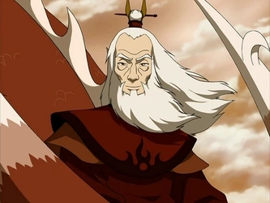

Avatares da Era de Wan
A Era de Wan é o período na linha do tempo do Universo Avatar desde a unificação do Espírito Raava com o Avatar Wan até a quebra dessa conexão por Unavaatu, que separou Raava da Avatar Korra
Avatar Korra (153 DG - Atualmente)
Korra é a atual encarnação do Avatar e imediata sucessora do Avatar Aang. Nascida e crescida na Tribo da Água do Sul, onde aprendeu a Dobra de Água, Dobra de Fogo e Dobra de Terra, mais tarde se mudou para Cidade República para aprender a Dobra de Ar com Tenzin assim como os aspectos espirituais das Artes de Dobra. Com a ajuda do espírito de Aang, Korra ganhou a habilidade de se dobrar energia, e depois de se conectar com suas vidas passadas, ela ganhou a capacidade de entrar no Estado Avatar à vontade, marcando sua transição para um Avatar totalmente realizado.
Avatar Aang (12 AG - 153 DG)

Aang foi um Nômade do Ar nascido em 12 AG e o Avatar durante o conflito conhecido como Guerra dos Cem Anos. Seu antecessor imediato foi o Avatar Roku, e sua sucessora foi a Avatar Korra. Como o Avatar de seu tempo, foi o único capaz de realizar a dobra dos quatro elementos. Ele também foi um dos poucos Avatares, e o primeiro em vários ciclos, a aprender a antiga arte da Dobra de Energia, e o primeiro Avatar a utilizar a técnica.
Avatar Roku (82 AG - 12 AG)
Roku foi o Avatar anterior ao Avatar Aang. Ele nasceu na Nação do Fogo. Sendo um espírito, Roku serviu como uma força orientadora para Aang a série inteira. Roku possui um companheiro animal, um Dragão vermelho chamado Fang, que serviu a ele da mesma forma que Appa faz com Aang.
Avatar Kyoshi
Kyoshi foi uma encarnação anterior do Avatar, nascida no Reino da Terra, numa península que, devido à sua Dobra de Terra foi transformada numa ilha, que recebeu seu nome, a Ilha Kyoshi. Ela era a Avatar imediatamente posterior ao Avatar da Tribo da Água, Kuruk, e anterior ao Avatar Roku, da Nação do Fogo, respectivamente, cerca de 412 anos antes da descoberta de Aang na Tribo da Água do Sul.
Avatar Kuruk

Kuruk foi o Avatar da Tribo da Água imediatamente posterior a Avatar Yangchen e anterior a Avatar Kyoshi. Nativo da Tribo da Água do Norte, ele nasceu em torno de 345 AG e morreu em 312 AG. Embora poderoso como um dobrador, ele era uma pessoa impetuosa e arrogante que sempre preferiu "ir com o fluxo". Devido a esta atitude e seu comportamento pomposo, Kuruk perdeu sua noiva, Ummi, a Koh o Ladrão de Faces.
Avatar Wan
Wan tornou-se o primeiro avatar ao se fundir com o espírito da luz, Raava. Ele era um garoto humilde que viveu na era em que os humanos viviam em Tartarugas-Leões. Após ser banido de seu lar, aprendeu a conviver com os espíritos decidido a equilibrar entre eles e o resto da humanidade.
Principais Benfeitorias
| Avatar | Principal Benfeitoria |
|---|---|
| Korra | Trouxe a Nação do Ar de Volta. |
| Aang | Acabou com a Gerra dos Cem Anos. |
| Roku | Criação da dobra de lava. |
| Kyoshi | Trouxe paz ao Reino da Terra ao impedir a corrupção. |
| Kuruk | Impediu a invasão de Espíritos Malignos ao Mundo Físico |
| Wan | Se tornou o primeiro Avatar e derrotou Vaatu |